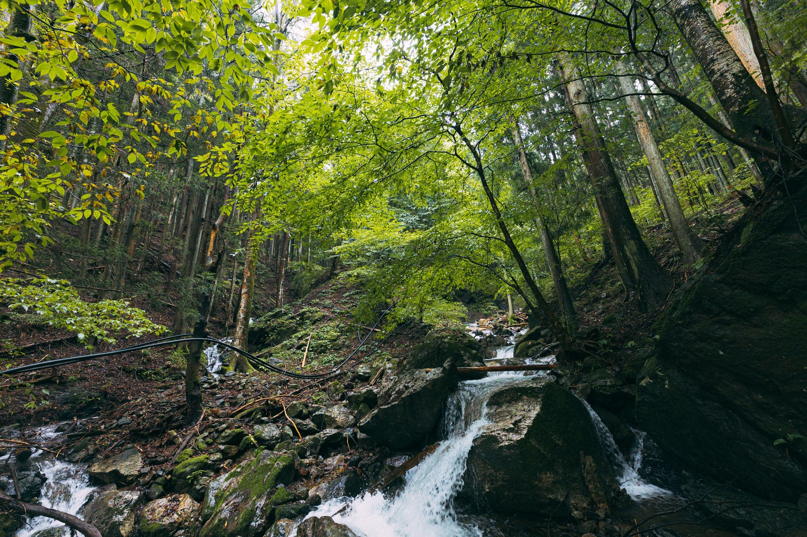
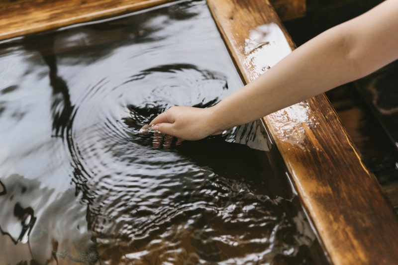
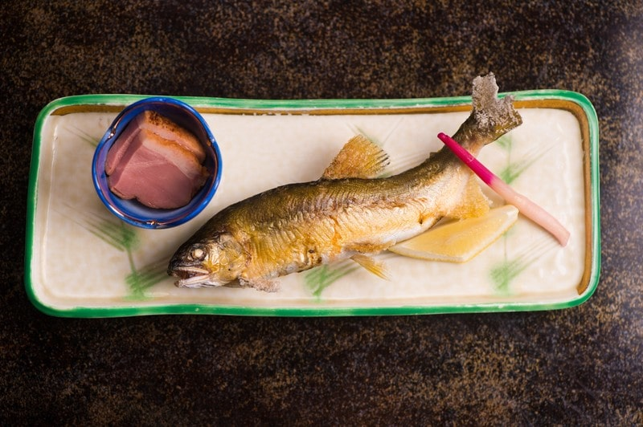

「旅館 しだれ」の施設について


三河の大自然に囲まれて楽しむ、四季折々の風景
豊田市の郊外にある枝下町では自然がとても豊かで、春は桜、夏は新緑、秋は紅葉、冬は降雪と日本ならではの季節感をお楽しみいただけます。紅葉の観光名所「香嵐渓」へのアクセスも抜群です。ぜひ、愛知へお越しの際は「旅館 しだれ」をご利用ください。 アクセスマップを見る
源泉かけ流しの露天風呂

源泉かけ流しの露天風呂で心と体をリラックス…日々の疲れを癒やしませんか？「旅館 しだれ」では源泉かけ流しの天然温泉をご利用いただけます。枝下町は市街地から少々離れておりますので、星空が非常によく見えます。露天風呂で眺めを楽しみつつお過ごしください。
愛知の味覚を味わう「料亭 枝垂桜」
愛知のグルメと言えば「名古屋めし」が有名ですが、実はそれ以外にもたくさんの名物がございます。豊田市を流れる一級河川「矢作川」で捕れた鮎をはじめ、多くの愛知グルメを提供させていただいております。 料亭「枝垂桜」について
